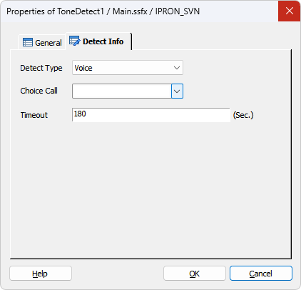

MakeCall 후에 사람 음성이나 기계음을 감지하기 위한 별도의 아이템입니다.
※ 주의 : MakeCall 아이템의 Tone Detect 속성이 체크해제 되거나 Tone Timeout 이 0 으로 설정되어 있어야 합니다.
* ForCus v6.0 이상 지원
ICON

PROPERTIES
 Detect Info
Detect Info

Detect Type : 감지할 타입을 선택합니다.
Choice Call : Multi Call 에서 콜을 선택 합니다.
Timeout : 타임아웃을 지정합니다.(MakeCall 아이템의 Tone Timeout 에 해당합니다.)
RESULT
RELATED